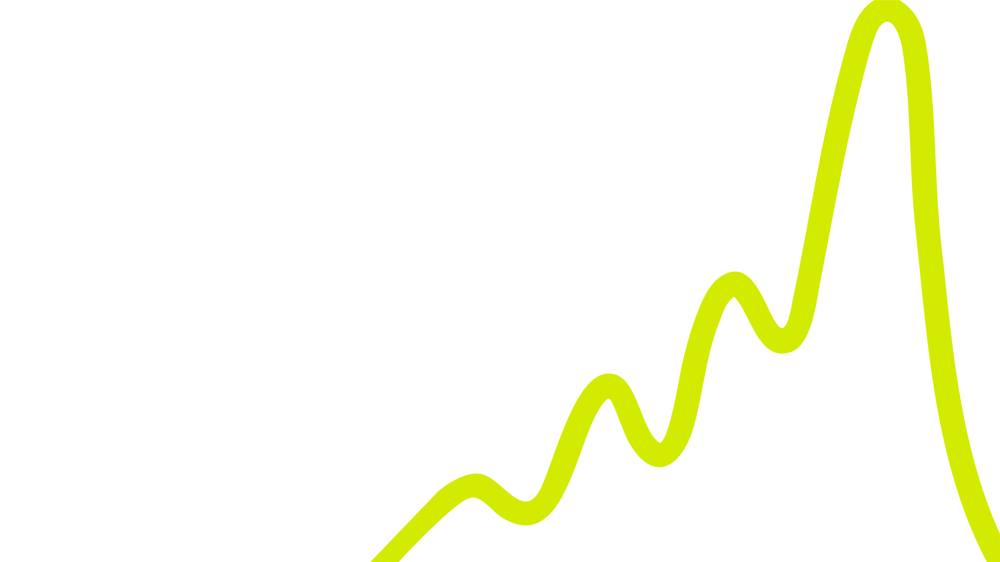

We’re Wise.
Making money wiser for the many personalities who move it across borders.
Behind every transaction is an emotion.
When our Singapore and Malaysia teams came together, one thing was clear: the most compelling stories about money movement are personal. Wise is valued for transparency and function — but there’s room to be loved, not just used.
Where we’re going.
Cost and trust concerns shape caution.
Singapore — some users prefer competitors over conversion fees.
Malaysia — scam ads impersonating Wise are eroding trust.
Reliability still earns credit on social over competitors.
Cross-border utility drives the strongest word-of-mouth.
Cross-border isn’t a use case — it’s a lifestyle.
The borderless economy is already here.
Currency is emotional, not just financial.
Same behaviour, different weight.
Defined by how money moves through their lives.
Everyday finance, made clearer
Family support, tuition, and investments across currencies.
Growth without borders
Freelancers and sellers managing international income.
Travel money that lives on
Regional regulars with leftover currency in a drawer.
Travels across SEA several times a year for work and weekends — and comes home with leftover currency that sits forgotten until the next trip.
See Wise as the account her travel money lives in between trips.
Runs a growing e-commerce business across APAC — receiving in multiple currencies while paying suppliers, platforms and freelancers across borders.
Run his whole operation on Wise — infrastructure that moves as fast as his ambition.
Supports family in two countries, pays for a child’s overseas tuition, and holds a small basket of foreign investments — all while watching every fee.
Trust Wise as the calm, clear home for every cross-border decision she makes for her family.
Make your money wiser.
Empower people to stretch every dollar, unlock opportunity across borders, and make smarter decisions — across how they live, work and play.
Give your currency a second life.
Every trip ends the same way — leftover cash in a drawer, slowly losing value.
Hold it, spend it, forward it. Turn the end of one trip into the start of the next.
Build like you have no borders.
Going global means death by a thousand fees — and a finance stack that can’t keep up.
One account that receives, holds and pays in every currency — built for the borderless business.
How the story travels.
One method, four moves.
Listen
Audit the market, the audience, and the conviction to own.
Frame
Shape the narrative and the proof points behind it.
Earn
Win the tier-1 stories and third-party belief.
Travel
Scale the one story across every channel that matters.
Measured, not assumed.
Positive, negative or neutral share of conversation.
Filter-through of agreed Wise messages in coverage.
Inclusion of key blurbs, links and project mentions.
Quality content vs. competitors in key conversations.
Senior counsel, on the account.
Maureen Tseng
Close to 30 years driving results-led communications for Fortune 500 brands — Tencent, Zoom, Google, Cisco and PayPal among them. Maureen heads Singapore as a regional hub for Southeast Asia and APAC.
Built to match your ambition, not inflate ours.
Kuala Lumpur
Bangkok
Jakarta
Hong Kong
Shanghai
Shenzhen
Taipei
Tokyo · Seoul
Paris
Munich · Berlin
Frankfurt
Portland
Boston
Every office is staffed by locals who live and breathe the market — one team, no silos.
We don’t just think differently. We solve differently.
Brand experience
Your brand isn’t seen. It’s felt.
Cracking the creative
A formula for great ideas, every time.
Storytelling science
The system behind stories that move markets.
Let’s make money wiser.
hoffman.com